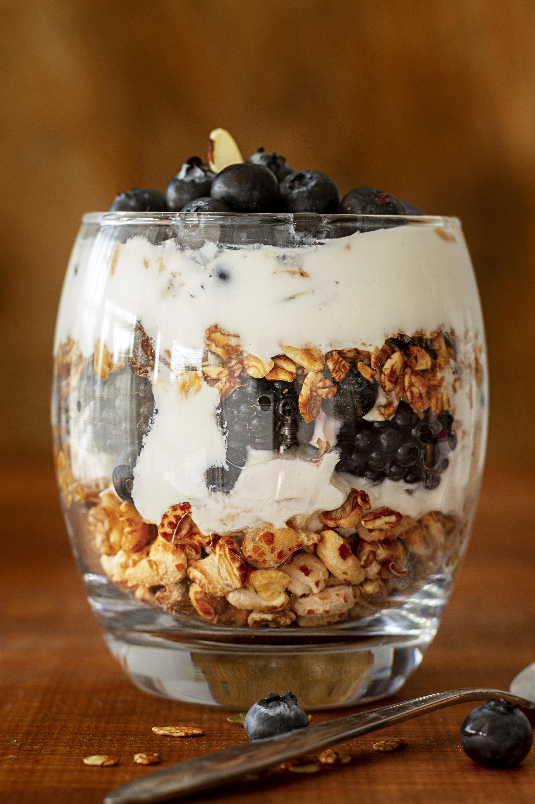

Yogurt Parfait
Home

Designed by Magnific
Description
An modern-styled parfait containing alternating layers of cereals, fruits, and yogurt.
Recipe source.
Ingredients
- 2 cups vanilla yogurt
- 1 cup granola
- Any fruit(s) of your choice.
Steps
- Layer some granola into a glass cup.
- Layer some yogurt on top of the granola.
- Layer some fruits on top of the yogurt.
- Repeat the layering in the same order until the fruit is at the top of the cup.